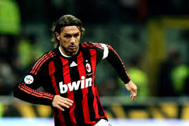
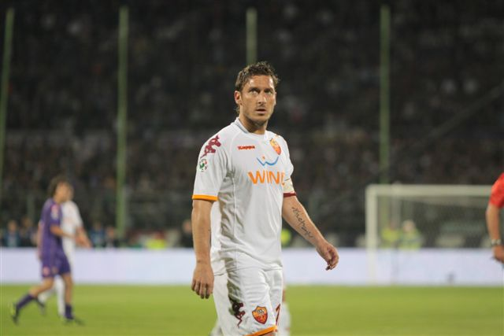
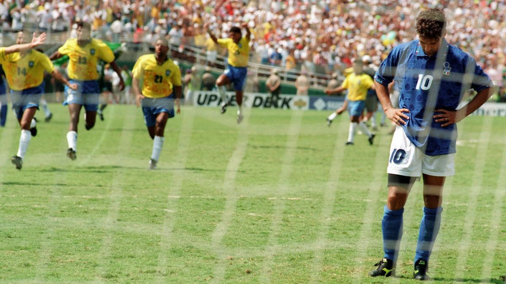
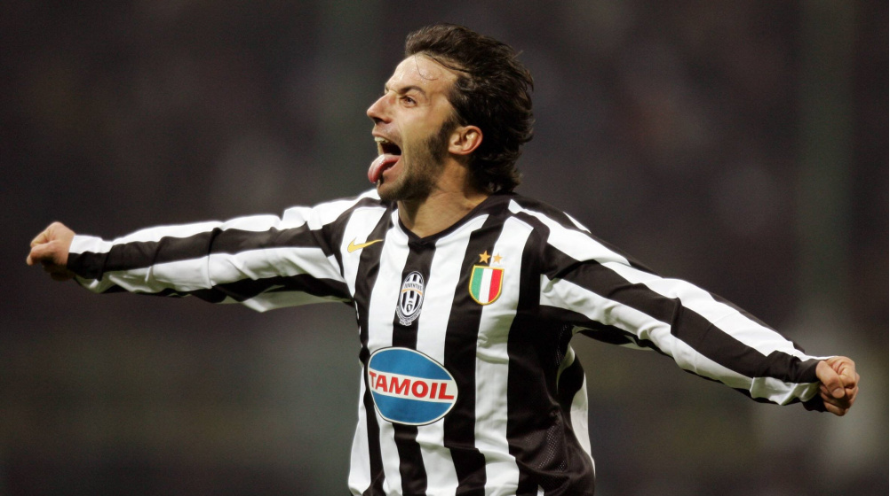
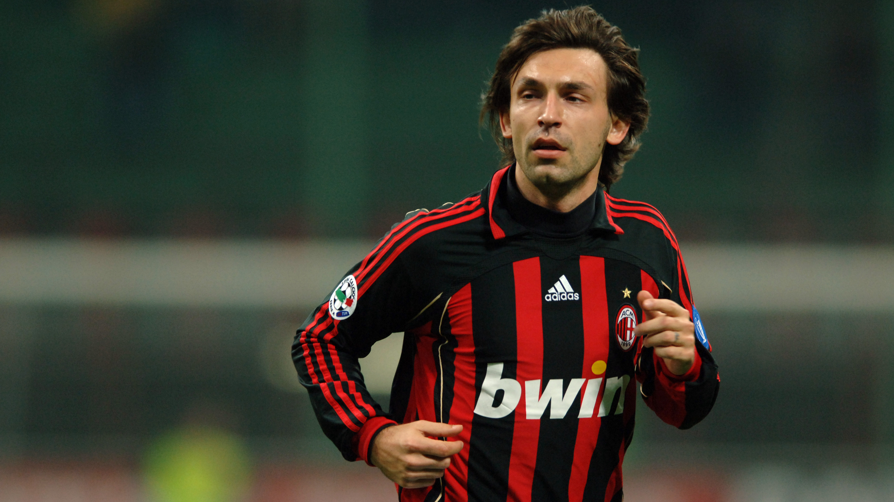
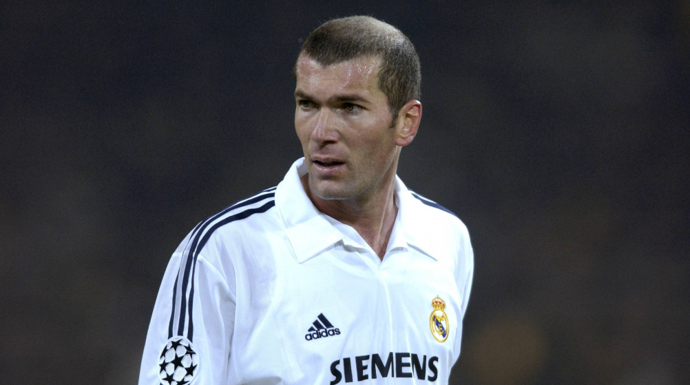

La Serie A es la máxima categoría del fútbol profesional en Italia y una
de las ligas más importantes y seguidas en el mundo del fútbol. Aquí
tienes un resumen de su historia, actualidad y algunos de sus mejores
equipos.
La historia de la Serie A
La Serie A italiana tiene sus raíces en la formación de la Federación
Italiana de Fútbol (FIGC) en 1898, que ayudó a organizar y desarrollar el
fútbol en el país. Durante las primeras décadas del siglo XX, el fútbol
italiano se estructuró en diferentes ligas regionales, con la FIGC
organizando un campeonato nacional en el que los equipos campeones de las
ligas regionales competían por el título. La Serie A en su forma actual
fue establecida en 1929, cuando se creó la Divisione Nazionale por
iniciativa del entonces presidente de la FIGC, Leandro Arpinati. Esta
nueva liga nacional tenía como objetivo unificar el fútbol italiano y
aumentar su competitividad. Originalmente, la Serie A estaba formada por
18 equipos, aunque este número ha variado a lo largo de los años. A lo
largo de su historia, la Serie A ha sido testigo de períodos de dominio
por parte de ciertos equipos. En las décadas de 1930 y 1940, el Torino
dominó la liga, ganando varios títulos consecutivos. Durante los años 80 y
90, el AC Milan y la Juventus emergieron como potencias dominantes,
ganando numerosos títulos de liga y triunfando en competiciones europeas.
Uno de los momentos más oscuros en la historia de la Serie A ocurrió en
2006 con el escándalo de arreglo de partidos conocido como "Calciopoli".
Varios clubes, incluidos Juventus, AC Milan y Fiorentina, fueron
implicados en la manipulación de resultados y recibieron sanciones
severas, incluidas deducciones de puntos y descensos de categoría. A pesar
de estos contratiempos, la Serie A ha mantenido su estatus como una de las
ligas más emocionantes y competitivas del mundo. Equipos como la Juventus,
el AC Milan, el Inter de Milán, el Napoli y la Roma han protagonizado
emocionantes batallas por el título de liga, y la Serie A ha sido el hogar
de algunos de los jugadores más destacados de la historia del fútbol.
Formato y equipos de la liga italiana
La Serie A está compuesta por 20 equipos que compiten entre sí en un
sistema de todos contra todos, donde cada equipo juega 38 partidos durante
una temporada (19 partidos en casa y 19 fuera de casa). Al final de la
temporada, los tres equipos con menos puntos son relegados a la Serie B,
mientras que los dos primeros equipos de la Serie B y el ganador de un
playoff entre el tercero al sexto ascienden a la Serie A.
Actualidad
La Serie A sigue siendo una de las ligas más emocionantes y competitivas
de Europa. Es conocida por su estilo de juego táctico y defensivo, así
como por la pasión de sus aficionados. Si bien ha enfrentado desafíos en
los últimos años en términos de competitividad a nivel europeo, la Serie A
sigue siendo una de las principales ligas del mundo, con una rica historia
y una base de aficionados devotos en todo el mundo.
Los mejores equipos de la serie A
Juventus: Conocida simplemente como Juventus o la
Vecchia Signora, es uno de los clubes más importantes y exitosos del
fútbol italiano. Fundado el 1 de noviembre de 1897, la Juventus ha
dominado el panorama futbolístico italiano durante décadas y ha dejado
una marca indeleble en el fútbol europeo.
AC Milan: Club de fútbol icónico con una rica
historia y una destacada trayectoria en el fútbol italiano y europeo.
Fundado el 13 de diciembre de 1899, el AC Milan ha sido un bastión del
fútbol italiano durante más de un siglo. Disputa sus partidos en el
famoso Estadio San Siro, compartido con el Inter de Milán.
Inter de Milán: También conocido simplemente como
Inter, es uno de los clubes de fútbol más prominentes de Italia.
Fundado el 9 de marzo de 1908, el Inter ha dejado una marca indeleble
en el fútbol italiano e internacional. El equipo disputa sus partidos
como local en el Estadio San Siro, compartido con su rival local, el
AC Milan.
Napoli: Società Sportiva Calcio Napoli, conocido
comúnmente como Napoli, es un club de fútbol italiano fundado en 1926.
Aunque inicialmente el club tuvo altibajos en su rendimiento,
experimentó un período dorado en la década de 1980 bajo el liderazgo
de Diego Maradona.
AS Roma:Associazione Sportiva Roma, comúnmente
conocida como Roma, es uno de los clubes de fútbol más prominentes de
Italia. Fundado el 22 de julio de 1927, el club tiene su sede en la
ciudad de Roma y disputa sus partidos como local en el Estadio
Olímpico de Roma, compartido con su rival local, la SS Lazio.
Los mejores jugadores que han pasado por la Serie A
Paolo Maldini: Considerado uno de los mejores
defensores de todos los tiempos, Maldini pasó toda su carrera en el AC
Milan, ganando múltiples títulos de Serie A y siendo una figura
emblemática del fútbol italiano.

Francesco Totti: Una leyenda del AS Roma, Totti pasó
toda su carrera en el club romano, donde se convirtió en el máximo
goleador en la historia del equipo y en uno de los jugadores más
queridos del fútbol italiano.

Roberto Baggio: Conocido por su habilidad técnica y
su habilidad goleadora, Baggio jugó para varios clubes de la Serie A,
incluidos el Fiorentina, el Juventus, el AC Milan e Inter de Milán,
dejando una marca indeleble en la liga.

Alessandro Del Piero: Una leyenda del Juventus, Del
Piero fue uno de los delanteros más destacados de su generación y un
símbolo del club turinés, ganando múltiples títulos de Serie A y
siendo el máximo goleador del equipo.

Andrea Pirlo: Un elegante centrocampista conocido por
su visión de juego y su precisión en los pases, Pirlo jugó para el AC
Milan y la Juventus, ganando múltiples títulos de Serie A y siendo una
figura clave en la selección italiana.

Zinedine Zidane: Uno de los mejores jugadores de
fútbol de todos los tiempos y el mejor en su posición (mediocentro o
mediocentro ofensivo). Empezó en la Ligue 1 con el AS Cannes y el
Girondins de Bordeaux antes de convertirse en una estrella
internacional con la selección de Francia y equipos como la Juventus y
el Real Madrid.

Diego Maradona: Aunque su tiempo en la Serie A fue
relativamente corto en comparación con otros jugadores, Maradona dejó
una impresión imborrable durante su tiempo en el Napoli, llevando al
equipo a dos títulos de liga y convirtiéndose en un ícono del fútbol
italiano.